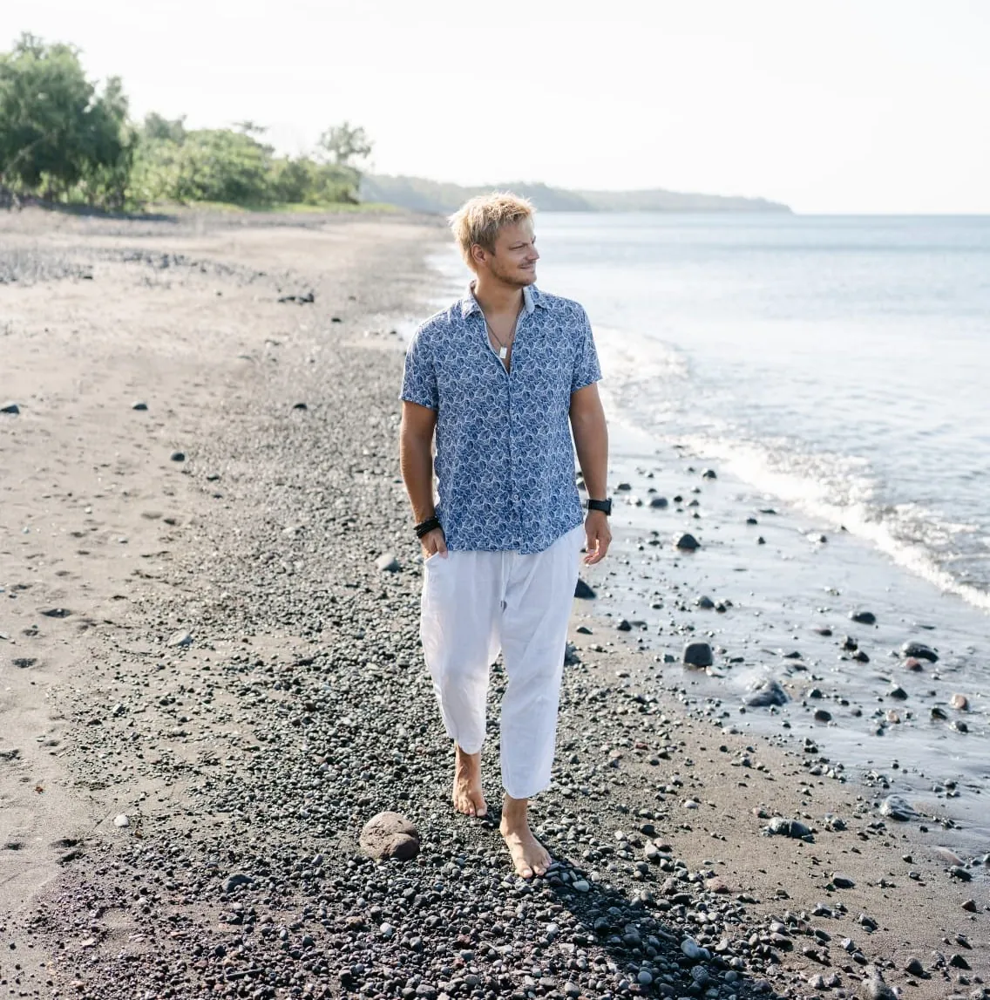

About
Who I Am
About Me
Hey there! I'm Antoine Baud, and I'm absolutely thrilled you're here. I'm a diving instructor, marine biologist, and someone who genuinely loves sharing the incredible magic I've discovered beneath the waves.
My Journey
I've been lucky enough to combine my love for the ocean with my academic background. I have two master's degrees-one in Marine Biology (I focused on animal behavior and biodiversity conservation) and another in Natural Resource Management. But honestly, what really drives me is getting people excited about the underwater world and helping them see it through fresh eyes.
What I Do
As a certified SDI instructor, I teach diving courses and lead guided dives. When I'm not underwater, I work with a company that specializes in environmental engineering and aquatic ecology, and I also teach a course at the University of Neuchâtel about how humans connect with aquatic environments. It's pretty cool to see students light up when they start understanding these connections!
About SDI Certification
I'm certified as an SDI (Scuba Diving International) instructor. SDI is part of the WRSTC (World Recreational Scuba Training Council), which sets the global standards for recreational diving training. These are the same international standards used by major diving organizations like PADI, SSI, and others. So your SDI certification is recognized worldwide and follows the same rigorous safety and training standards as other leading agencies.
All SDI certifications meet WRSTC standards, so your diving credentials will be recognized and accepted at dive centers everywhere. Whether you're planning to dive in the Caribbean, the Red Sea, or the Pacific, your SDI certification will be valid wherever your adventures take you!
Why I Do This
Through Athelas Diving, I get to help people discover something truly special-the healing, inspiring power of the underwater world. Whether it's through learning to dive, understanding marine ecology, or simply connecting mindfully with nature, I believe every dive is a chance to experience something extraordinary. There's nothing quite like watching someone's face light up when they see their first sea turtle or discover a hidden reef ecosystem!
Underwater Photography
All the photos on athelas-diving.com were done by Veronica Caggia from veranaturae.

AboutThe Origin of the Name Athelas
Our name draws inspiration from Athelas, the legendary "King's Herb" from J.R.R. Tolkien's Middle-earth. This mystical plant, known for its extraordinary healing properties, serves as a perfect metaphor for our diving philosophy:
The Otherworldly Experience
Just as Athelas exists in a realm of fantasy and wonder, diving transports us to an otherworldly underwater universe. Here, you'll encounter creatures straight from science fiction - from the most beautiful to the most bizarre life forms.
Healing and Inner Peace
Like Athelas, which could heal even the darkest of sicknesses, diving offers profound healing for the mind and soul. The underwater world has a unique ability to silence inner turmoil and bring deep inner peace.
Nature's Magic
Athelas reminds us that true magic lies in the natural world around us. Through diving, we discover the incredible beauty and wonder of marine ecosystems, reconnecting with nature's most enchanting realms.
At Athelas Diving, we believe that every dive is an opportunity to experience this natural magic, find inner healing, and discover the extraordinary world beneath the waves.
Get in Touch
Curious to learn more or ready to start your diving adventure? I'd be thrilled to chat with you!